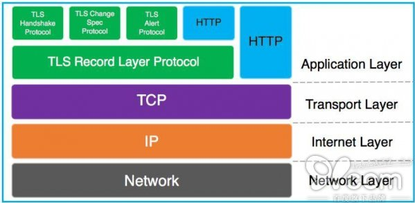
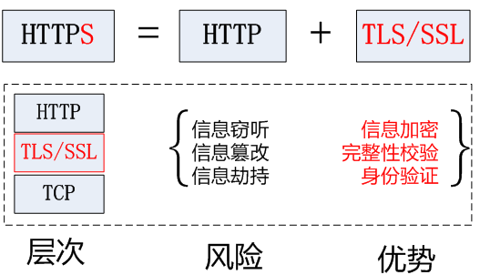
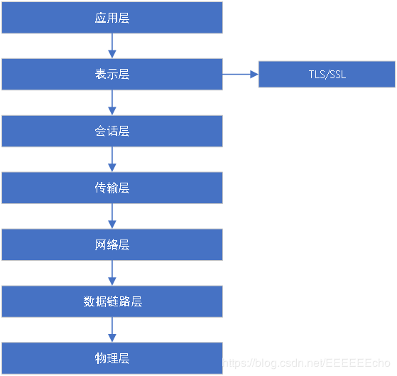
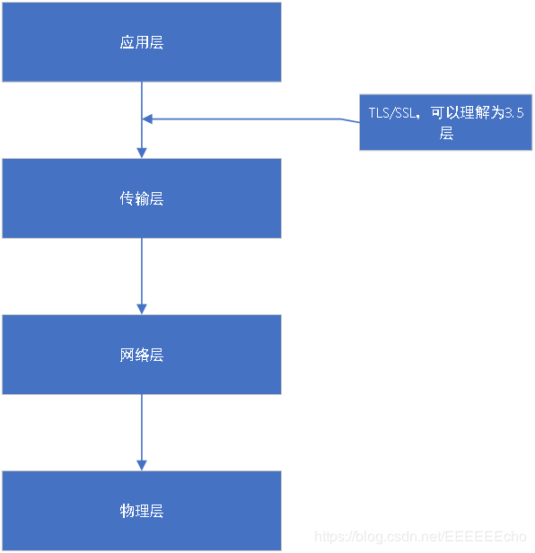

# What is protocol
网络协议通俗的讲是网络上两台计算机之间通信所要共同遵守的标准。协议规定了一种信息交流的格式和规范。协议本身并不是一种软件，只是一种通信的标准，协议最终需要由软件来实现，网络协议的实现就是在不同的软件和硬件环境下，执行可运行于开中环境的 “协议” 翻译程序。说白了就是软件要实现这个协议翻译程序，从而使双方遵守这某一协议。不同的网络交互软件的功能可能不同，但是都会翻译同一种网络协议。实现网络协议，就像是给所有接入网络的设备配备了一个 “通用语言翻译器”，这些翻译都懂通用语言：例如国际上的英语，同时它也懂得本国的语言。这样就能实现不同国家不同环境的人接入同一个网络并进行交流。
协议分层：我用英语说：“How are you.” 不一定表示 “你好！”，我们可以事先约定，这句话表示 “再看一遍” 的意思。这就象是所谓的江湖 “黑话”，或叫 “专业术语”。实际上，这时我们自己制定了一个新的通信标准，一个新的 “高层协议” 己经诞生了。这个协议在 “英语” 的基础上，再制定自己的通信标准，这种新的通信标准就是基于 “英语” 这种 “底层协议” 的 “高层协议”，我们可以把这种协议取名为 “讲课协议”。说白了协议的分层就是在一个既定的协议之上再添加某些限定条件。创造一个新的协议。比如果规定双方用英语交流，那么在使用英语交流的过程中，对英语中的 “Hello” 单词，定义他的意思是” 帅哥 “。那么它在双方交流的时候就被理解为帅哥的意思。这就是又制定了一个新的协议。协议除了分层之外，还可以组合，比如将 IP 协议，TCP 协议以及 UDP 协议组合在一起称为 TCP/IP 协议。
所以说下面的 SSL 协议就是在 TCP 协议的基础上，又对信息传输做了某些规定，从而产生的一种新的协议。
# HTTPS、TLS、SSL
HTTPS，也称作 HTTP over TLS。TLS 的前身是 SSL，TLS 1.0 通常被标示为 SSL 3.1，TLS 1.1 为 SSL 3.2，TLS 1.2 为 SSL 3.3。下图描述了在 TCP/IP 协议栈中 TLS (各子协议) 和 HTTP 的关系。

# HTTPS protocol

由于 http 明文传输，很不安全所以出现了 https.
https 是由 http “调用” SSL/TLS 中的加密算法和协议逻辑，实现保密传输。
https 不能说是一个协议，只能说是一种应用。SSL 加密 http 中的内容。然后默认使用 433 端口进行传输，SSL 还可以加密 Email，默认使用 955，465 端口。任何一个应用层协议都可以调用 TLS/SSL 来加密其明文数据。
所以简单总结就是 : https = http + SSL/TLS
HTTPS 在 RFC2818 被标准化，HTTPS 工作在 443 端口，而 HTTP 默认工作在 80 端口。
HTTP 的连接很简单，是无状态的。
HTTPS 协议是由 SSL+HTTP 协议构建的可进行加密传输、身份认证的网络协议，要比 HTTP 协议安全。
从上面可看出，HTTPS 和 HTTP 协议相比提供了
・数据完整性：内容传输经过完整性校验
・数据隐私性：内容经过对称加密，每个连接生成一个唯一的加密密钥
・身份认证：第三方无法伪造服务端 (客户端) 身份
其中，数据完整性和隐私性由 TLS Record Protocol 保证，身份认证由 TLS Handshaking Protocols 实现。
# SSL protocol
SSL 协议（Secure Socket Layer 安全套接层）是 Netscape 研发的，保障在 Internet 上数据传输安全的一个协议，它利用数据加密技术，可以确保数据在网络上的传输过程不被截取或者窃听。被广泛应用于 Web 浏览器和服务器之间的身份认证和加密数据传输。
SSL 协议位于 TCP/IP 协议与各种应用层协议之间。为数据通讯提供安全支持。
SSL 协议可以分为两层：
SSL 记录协议：建立在可靠的传输协议（如 TCP）上，为高层协议提供数据封装，压缩，加密，解密基本功能。
SSL 握手协议：建立在 SSL 记录协议止尚，用于在实际的数据传输开始之前，通讯双方进行身份验证，协商加密算法，交换加密密钥等。
Email over SSL:
类似于 HTTP over SSL，邮件协议例如：
- SMTP，POP3、IMAP 也能支持 SSL。
- SMTP over TLS 的标准文档在 RFC2487
- POP3 和 IMAP over TLS 的标准化文档在 RFC2595.
# TLS protocol
TLS 协议 Transport Layer Security 传输层安全）是 SSL 协议经历了 SSL1.0,2.0,3.0 版本后发展成为的一种新的安全标准协议。TLS 有 1.0，1.1，1.2，1.3 这几个版本.
TLS 全称是安全传输层协议，用于在两个通信应用程序之间提供保密性和数据完整性。
该协议由两层组成：
TLS 记录协议，TLS 握手协议，较底层的是 TLS 记录协议。位于某个可靠的传输协议（如 TCP）之上。
一次加密通信需要实现 3 个任务：机密性，完整性，身份认证。
版本号：TLS 记录合适与 SSL 记录格式相同，但是版本号值不同，TLS 的版本 1.0 使用的版本号为 SSLV3.1.
# TLS/SSL 在网络通信模型中的位置
在 OSI 协议层中

7 应用层
application layer 例如 HTTP、SMTP、SNMP、FTP、Telnet、SIP、SSH、NFS、RTSP、XMPP、Whois、ENRP
6 表示层
presentation layer 例如 XDR、ASN.1、SMB、AFP、NCP
5 会话层
session layer 例如 ASAP、SSH、ISO 8327 / CCITT X.225、RPC、NetBIOS、ASP、IGMP、Winsock、BSD sockets
4 传输层
transport layer 例如 TCP、UDP、TLS、RTP、SCTP、SPX、ATP、IL
3 网络层
network layer 例如 IP、ICMP、IPX、BGP、OSPF、RIP、IGRP、EIGRP、ARP、RARP、X.25
2 数据链路层
data link layer 例如以太网、令牌环、HDLC、帧中继、ISDN、ATM、IEEE 802.11、FDDI、PPP
1 物理层
physical layer 例如线路、无线电、光纤TCP/IP 协议中

4 应用层
application layer 例如 HTTP、FTP、DNS
（如 BGP 和 RIP 这样的路由协议，尽管由于各种各样的原因它们分别运行在 TCP 和 UDP 上，仍然可以将它们看作网络层的一部分）
3 传输层
transport layer 例如 TCP、UDP、RTP、SCTP
（如 OSPF 这样的路由协议，尽管运行在 IP 上也可以看作是网络层的一部分）
2 网络互连层
internet layer 对于 TCP/IP 来说这是因特网协议（IP）
（如 ICMP 和 IGMP 这样的必须协议尽管运行在 IP 上，也仍然可以看作是网络互连层的一部分；ARP 不运行在 IP 上）
1 网络接口层
link layer 例如以太网、Wi-Fi、MPLS 等。